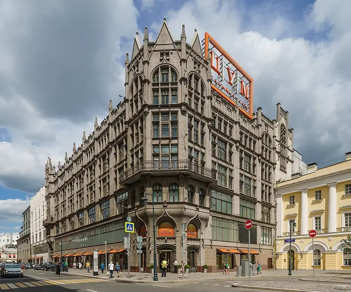
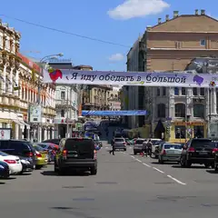

Фото: A.Savin, Free Art License · Wikimedia Commons
Брассери · ЦАО
BURO.TSUM
Брассери на пятом этаже ЦУМа с видом на Большой театр.
- ₽₽₽ · дороже 3 000 ₽ на человека
- В гиде Michelin 2021
Позвать сюда: BURO.TSUMОткрыть в каталоге: BURO.TSUMМаршрут до места: BURO.TSUM
Адрес и детали
- Адрес
- ул. Петровка, 2
Открыть на Яндекс Картах (в новой вкладке) - Метро
- м. Охотный ряд
- Округ
- Центр (ЦАО)
- Цена
- дороже 3 000 ₽ на человека
- Часы работы
- пн–пт 10:00–24:00; сб, вс 11:00–24:00 · проверили в октябре 2026
- Телефон
- +7 (495) 276-76-78
- Проверено
- работает — проверили в октябре 2026
Похожие рядом
Что ещё рядом

Улица Кузнецкий МостУлица · ≈ 1 минута пешком- Сплетни by Anna AstiКараоке-бар · ≈ 2 минуты пешком
 Большой театрТеатр · ≈ 2 минуты пешком
Большой театрТеатр · ≈ 2 минуты пешком- Московская опереттаТеатр оперетты · ≈ 3 минуты пешком
 Музей советских игровых автоматовМузей-аркада · ≈ 3 минуты пешком
Музей советских игровых автоматовМузей-аркада · ≈ 3 минуты пешком- Малый театрТеатр · ≈ 4 минуты пешком
Как позвать
- Выбери план, место или событие — в карточке адрес, цены и маршрут в Яндекс Картах.
- Нажми «Позвать сюда» — соберётся приглашение-игра для свидания или голосование для компании.
- Отправь ссылку в любой мессенджер: тебе ответят, а компания отметит, куда и когда может. Бесплатно и без регистрации.